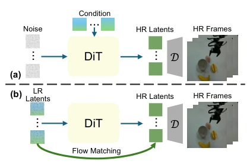
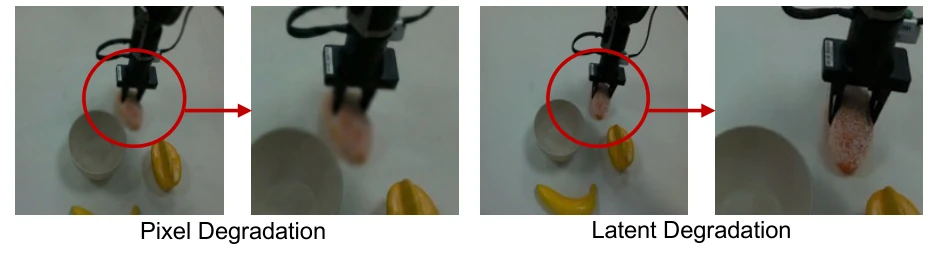
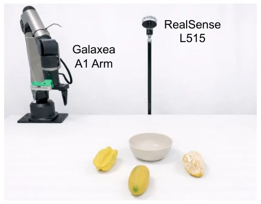
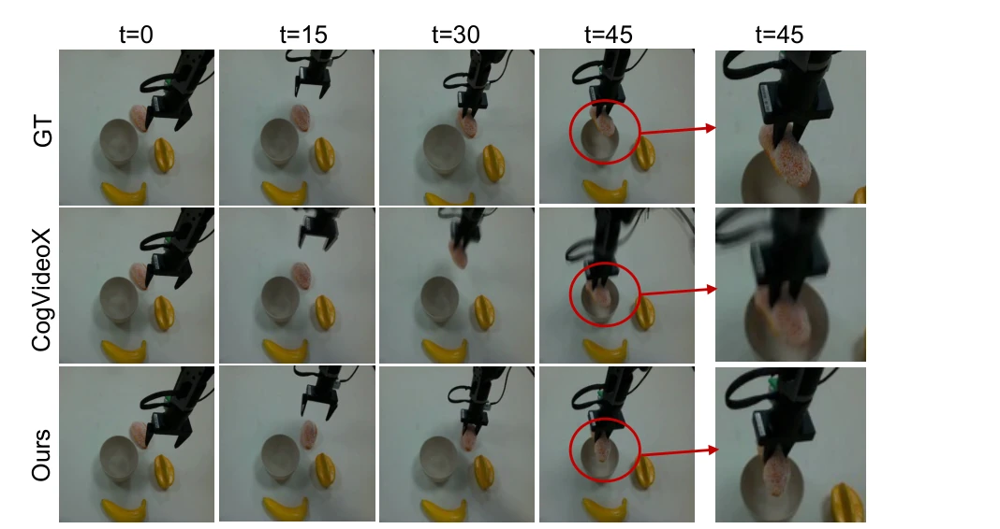
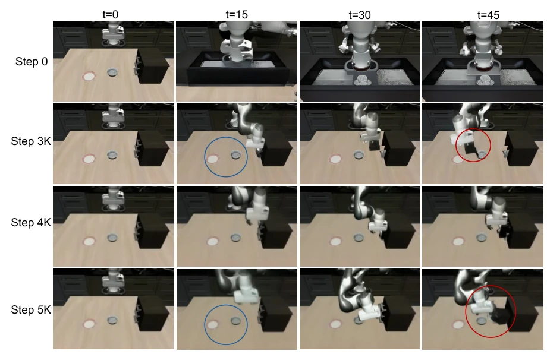

Figure 1. Illustration of our DVG-WM. Given the initial observation and a language instruction, DVG-WM first generates a sequence of low-resolution imagined future trajectory to preview the physical interaction, then reconstructs the high-fidelity video with faster inference speed (right). In addition to the improved visual quality, DVG-WM also achieves impressive performance on real-world manipulation tasks.
Figure 2. Pipeline of DVG-WM. The video world model consists of two main stages: 1) a preview stage that learns dynamics and generates low-resolution trajectories conditioned on language instructions and initial frames; 2) a refinement stage that upsamples the latent dynamics to produce high-fidelity video predictions with minimal additional computation. Finally, the inverse dynamics model extracts the action sequence from the predicted video for manipulation tasks.

Figure 3. Comparison of refinement ap- proaches. (a) Conventional DDPM treating low-resolution latents as conditioning input. (b) DVG-WM uses flow matching to directly map the low-resolution dynamics to high-resolution video latents.

Figure 4. Comparison of pixel (left) and latent degradation (right) for training the refinement stage. Latent degradation generates contact-rich details in zoomed-in view.
Figure 5. Qualitative comparison of video predictions from DVG-WM and CogVideoX on LIBERO tasks. Red circles highlight wrong critical interaction details of CogVideoX.

Figure 7. Real-world setup for Galaxea A1 Arm Platform.

Figure 8. Qualitative results on the real-world manipulation task of placing bread into bowl. DVG-WM generates high-fidelity video predictions that accurately capture the interaction details and follow language instructions for pick-and-place.
其他图片Other Figures

Figure 6. Comparison with generated videos of preview stage with different LoRA fine-tuning steps. Blue circles highlight the texture of the bowls, while the red circles highlight the contact details between the gripper and the drawer.